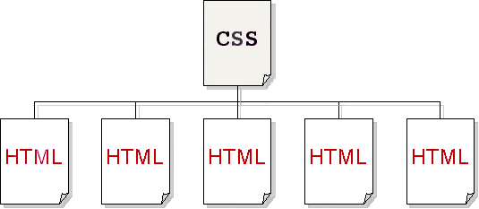
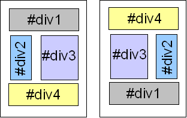

Le design d'un site évolue toujours au fil du temps. Le problème, lorsqu'on n'utilise pas de feuilles de style, c'est qu'il faut reprendre toutes les pages html une à une pour modifier une police de caractère ou une couleur de fond...
Avec les "Cascading Style Sheets" (CSS), ce lourd handicap est résolu.
C'est dans la feuille de style CSS que l'on va déclarer toute la mise en forme des pages : le positionnement des éléments, l'image de fond, les polices de caractère, les couleurs, etc.
Celle-ci sera liée à chaque page html. Ainsi, lorsqu'on en modifiera un élément, cela se répercutera immédiatement sur toutes les pages html. Puissant, pratique, bref : indispensable.

Outre les couleurs et les polices, on peut aussi changer radicalement l'apparence d'un site en abandonnant la mise en page à l'aide de tableaux. Soyons clair : un tableau sert normalement à présenter des données tabulaires, pas à faire de la mise en page.
Pour une mise en page souple et cohérente, on divisera la page en "blocs" (des div, appelés aussi "boites" ou "calques"), qui ont l'avantage de pouvoir être déplacés de gauche à droite, ou de haut en bas grâce aux CSS.

Attention
néanmoins, le fait que ce soit possible ne veut pas dire en abuser. Il faut tout de même garder une relative cohérence avec le flux, c'est à dire l'ordre dans lequel les informations ont été codées dans le code html.
On peut aussi faire plusieurs feuilles de style CSS dont chacune aura été optimisée pour un média différent. Une pratique recommandée est ainsi d'en faire une spécifique pour l'impression en spécifiant media="print".
Sélecteurs CSS class et id
le sélecteur class
les pages web sont souvent ponctuées d'ancres permettant de remonter en haut de page, et celles-ci sont souvent placées à droite de la page. Il va donc falloir déclarer un style spécial pour cette mise en forme spécifique, et le sélecteur class va nous y aider. A noter que dans la feuille de style, le nom du sélecteur class est toujours précédé d'un point.
Et voilà, et cette mise en forme peut-être répétée autant de fois que besoin dans la page.
Avec des noms spécifiques, class peut aussi servir à apporter plus de sémantique au code. Ce sont les microformats. On pourra ainsi spécifier, par exemple, la date de publication d'un article ou tous les éléments de la carte de visite d'une personne.
le sélecteur id
Le sélecteur id a presque la même fonction, à la différence importante qu'on ne peut l'utiliser qu'une seule fois dans la page, contrairement au sélecteur class. C'est pour cela qu'il est plutôt utilisé à la mise en page qu'à la mise en forme de caractères.
Deuxième exemple :
construisons une section de page à deux colonnes. L'une des deux colonnes servira pour un menu de 100 pixels de large flottant à gauche, l'autre pour un contenu placé à 110 pixels du bord gauche (pour ne pas empièter sur le menu bien sûr). Cette fois, ce n'est pas d'un point qu'il faudra faire précéder le nom du sélecteur id, mais d'un #.
Il n'aura pas échappé à votre sagacité qu'un id non déclaré dans les styles est venu se glisser dans la balise de titre h1 (id="haut").
C'est le deuxième effet id ! En effet, cet attribut peut être utilisé en javascript, et aussi servir d'ancre. Ainsi, le lien interne de haut de page y est rattaché directement. Cela explique aussi pourquoi on ne peut utiliser qu'un seul nom de id par page.
S'il y avait deux id="haut" dans la page, où irait le lien ?! hein ? je vous le demande !
Mettre en forme un texte en CSS
Depuis sa première mouture, CSS s'est spécialisé dans la mise en forme (autrement dit l'apparence) des sites web, permettant au HTML de se concentrer uniquement sur la structure du document.
Avec plus de 250 propriétés, CSS est très riche. Dans cet article, nous n'en aborderons que certaines, utilisées pour le formatage du texte :
color
font-family
(pour utiliser différentes polices)
font-size
font-weight
font-style
(pour, par exemple, mettre en italique)
line-height
text-align
text-decoration
(pour ajouter des lignes dessous, dessus et en travers du texte)
text-transform
(pour modifier la casse du texte)
Une fois que vous vous serez familiarisé avec ces propriétés, nous vous encourageons à explorer d'autres propriétés de formatage du texte telles que hyphens, letter-spacing, text-indent, text-overflow, vertical-align, white-space, word-spacing , les sélecteurs spécifiques (::first-letter ou ::first-line), ou les unités CSS utilisées pour la taille du texte (em et rem).
Pour personnaliser totalement votre texte, vous pouvez également utiliser vos propres polices de caractère grâce à @font-face.